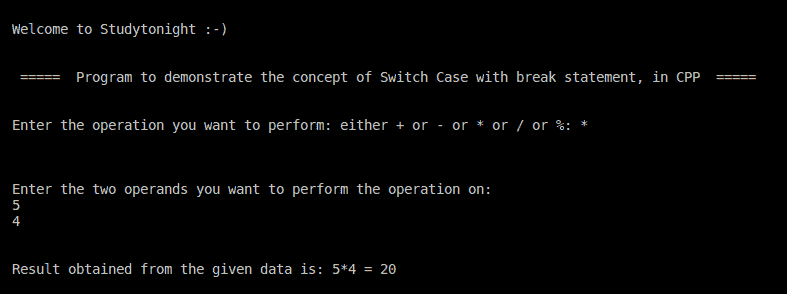

C++ 程序：带break语句的switch-case
原文：https://www.studytonight.com/cpp-programs/cpp-switch-case-with-break-statement-program
大家好！
在本教程中，我们将学习如何用 C++ 编程语言用 break 语句演示 Switch Case 的概念。
C++ switch-case:
在编程中，switch-case只是多个 if-else 块的一种替代方案。它仅在满足特定条件时用于执行代码块。break 语句用于阻止代码流进入剩余的块，从而使其在满足单个条件时直接移出开关块。
为了更好地理解，我们强烈建议您访问我们在这里的一个帖子:https://www.studytonight.com/c/programs/basic/switch-case，我们在那里详细讨论了这个概念。
代号:
#include <iostream>
#include <vector>
using namespace std;
int main()
{
cout << "\n\nWelcome to Studytonight :-)\n\n\n";
cout << " ===== Program to demonstrate the concept of Switch Case with break statement, in CPP ===== \n\n";
//variable to store the operation to be performed
char operation;
//variable to store the operands
int n1, n2, result;
cout << "\nEnter the operation you want to perform: either + or - or * or / or %: ";
cin >> operation;
cout << "\n\n\nEnter the two operands you want to perform the operation on: \n";
cin >> n1 >> n2;
//Logic of Switch case with break statement
switch (operation)
{
case '+':
result = n1 + n2;
break;
case '-':
result = n1 - n2;
break;
case '*':
result = n1 * n2;
break;
case '/':
result = n1 / n2;
break;
case '%':
result = n1 % n2;
break;
default:
cout << "\n\nPlease Enter a Valid Operation from the mentioned list";
break;
}
cout << "\n\nResult obtained from the given data is: " << n1 << operation << n2 << " = " << result << "\n\n\n ";
return 0;
}
输出:

我们希望这篇文章能帮助你更好地理解 Switch Case 的概念，包括 break 语句及其在 C++ 中的实现。如有任何疑问，请随时通过下面的评论区联系我们。
继续学习: